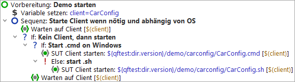
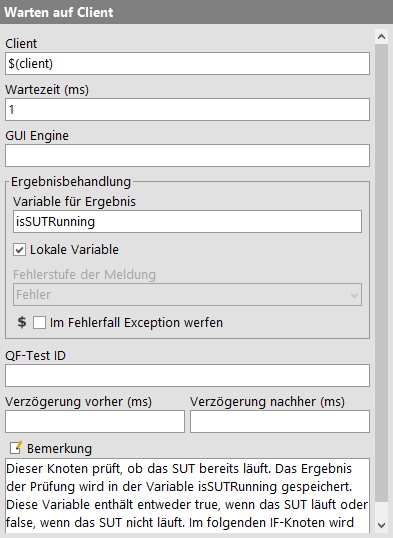
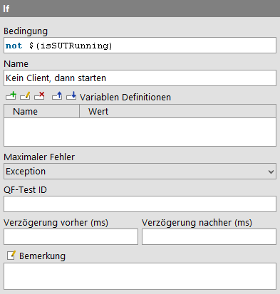

| Version 6.0.3 |
'If' und 'Else' Knoten kennen Sie bereits aus der 'Vorbereitung' Sequenz im Kapitel Starten der Anwendung. Sehen wir uns diese nun etwas genauer an.
|
|  | ||
|
| Abbildung 8.1: Setup Sequenz mit 'If'/'Elseif' Knoten | ||
Über einen 'If' Knoten können Sie steuern, ob bestimmte Knoten ausgeführt
werden oder nicht. In unserem Fall geht es um den Start des SUT. Zunächst
müssen wir herausfinden, ob die Applikation bereits läuft. Dies geschieht über
den 'Warten auf Client' Knoten, der als Ergebnis entweder true (wahr) oder false
(falsch) in die Variable isSUTRunning schreibt.
|
|  | ||
|
| Abbildung 8.2: 'Warten auf Client' setzt die Variable "isSUTRunning" mit dem Ergebnis | ||
Der 'If' Knoten wertet die Ergebnisvariable isSUTRunning im 'Bedingung'
Attribut aus. Da auf den Wert der Variablen zugegriffen werden soll,
wird die Syntax $() verwendet (vgl. Variablensyntax
in Kapitel Abschnitt 6.1).
|
|  | ||
|
| Abbildung 8.3: Der 'If' Knoten wertet die Variable aus | ||
Je nachdem, ob die Applikation bereits läuft, führt QF-Test die im 'If' Knoten enthaltenen Knoten aus oder nicht.
In der Variablendefinition-Tabelle können Sie den Wert der Variablen
isSUTRunning prüfen.
Beim ersten Mal ist der Wert false und damit die Bedingung
not $(isSUTRunning) wahr, d.h. die Knoten für den SUT-Start werden ausgeführt.
Beim zweiten Mal ist der Wert true und damit die Bedingung false.
Die Knoten im 'If' Knoten werden übersprungen.
Im ersten 'If' Knoten befindet sich ein weiterer, der prüft, um welches Betriebssystem es sich handelt. Bei Windows werden die Knoten, die direkt unter dem 'If' Knoten liegen, ausgeführt. Alternativ, d.h. wenn das Betriebssystem nicht Windows ist, werden die Kindknoten im 'Else' Knoten ausgeführt.
Bei der Prüfung des Betriebssystems wird direkt auf eine QF-Test Variable
zugegriffen. QF-Test speichert die Betriebssysteminformation in einer Gruppenvariable
ab, wobei die Gruppe qftest und die Variablen linux,
macos oder windows
heißen. Die Syntax für den Zugriff auf Gruppenvariablen ist ${group:varname},
z.B. ${qftest:windows}.
| Letzte Änderung: 6.9.2022 Copyright © 2002-2022 Quality First Software GmbH |